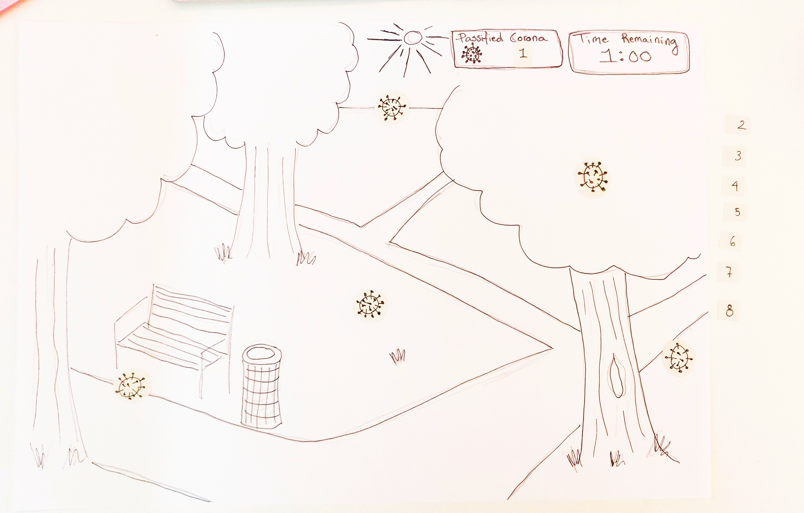
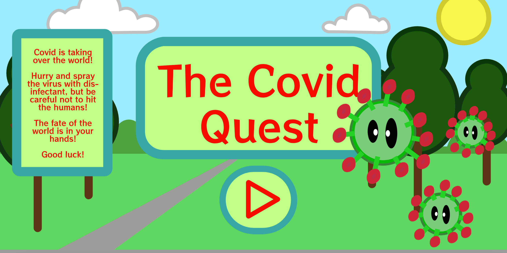
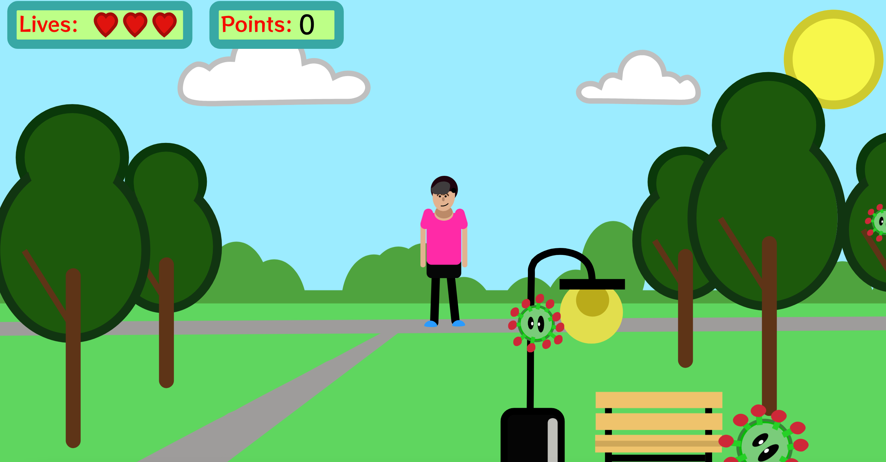

Tema 4 - Animation
Tema beskrivelse
I dette tema blev vi introduceret til programmeringssproget javascript, som er en uundværlig del af det moderne internet og bruges til at kode avancerede og dynamiske websites samt skabe interaktive elementer, som burgermenuer, slideshows, snap scrolls etc. I dette tema, skulle vi bruge javascript sammen med css animationer, til at skabe et lille spil. Vores spil skulle have et koncept og en ide, som vi selv fandt frem til og vi skulle selv designe alle elementer og kode spillet helt fra bunden.
På dette tema blev der lagt særlig vægt på, at man begyndte at arbejde professionelt med formgivning af grafiske elementer. Der blev analyseret spildesign og set på hvordan de engagerer brugerne gennem teori og konventioner inden for UI-elementer, figurelementer, baggrundsdesign og kompositionsteknikker. Man udvikler sit eget spildesign efter moderne konventioner og rentegner grafikken til spillet i Adobe Illustrator. Gennem arbejdet med sit eget spil lærte man at arbejde med aktivitets- og statemachine- diagrammer, som bruges til at planlægge det mere komplicerede interaktive flow. Principperne fra css og javaScript, som man lærte her, blev senere på semesteret videreført til at udvikle mere avancerede websites.
Idé fasen/skitsering
Det færdige spil kan prøves her:
Projekt beskrivelse
Her skulle vi aflevere vores eget endelige spil, med på vores website med al vores dokumentation. Kravene var at vi skulle have udarbejdet et spil i html, css og javascript. Vi skulle ligeledes beskrive idéen. Have en assetliste med, en side med dokumentation (aktivitetsdiagram, stateemachine diagram og evt. skitser), siden skulle være responsiv og den skulle validere.
Refleksioner af tema og projekt
Dette tema var noget overvældende og rent timingmæssigt var det jo
midt i dette tema vi fik lov at komme tilbage i skole. Det var for
mit vedkommende enormt vigtigt. Jeg havde rigtig svært ved dette
tema og det var svært for mig at vurderer om jeg var alene om at
have det sådan. Da jeg mødte fysisk op på skolen og kunne
kommunikere mere frit med mine medstuderende, opdagede jeg at
stort set alle havde haft det på samme måde. Det beroligede mig i
at jeg var der hvor vi skulle være i processen. Derudover syntes
jeg at det var enormt spændende også at udvikle et spil helt fra
bunden, fra egen idé, til skitsering, til udviklingen af spillets
komponenter lavet i illustrator. samt selv optage og redigere
lyden til spillet og sammensætte det hele til et velfungerende
mini spil.
- Hjemmesiden med dokumentation kan tilgås hvis du klikker på
billedet -